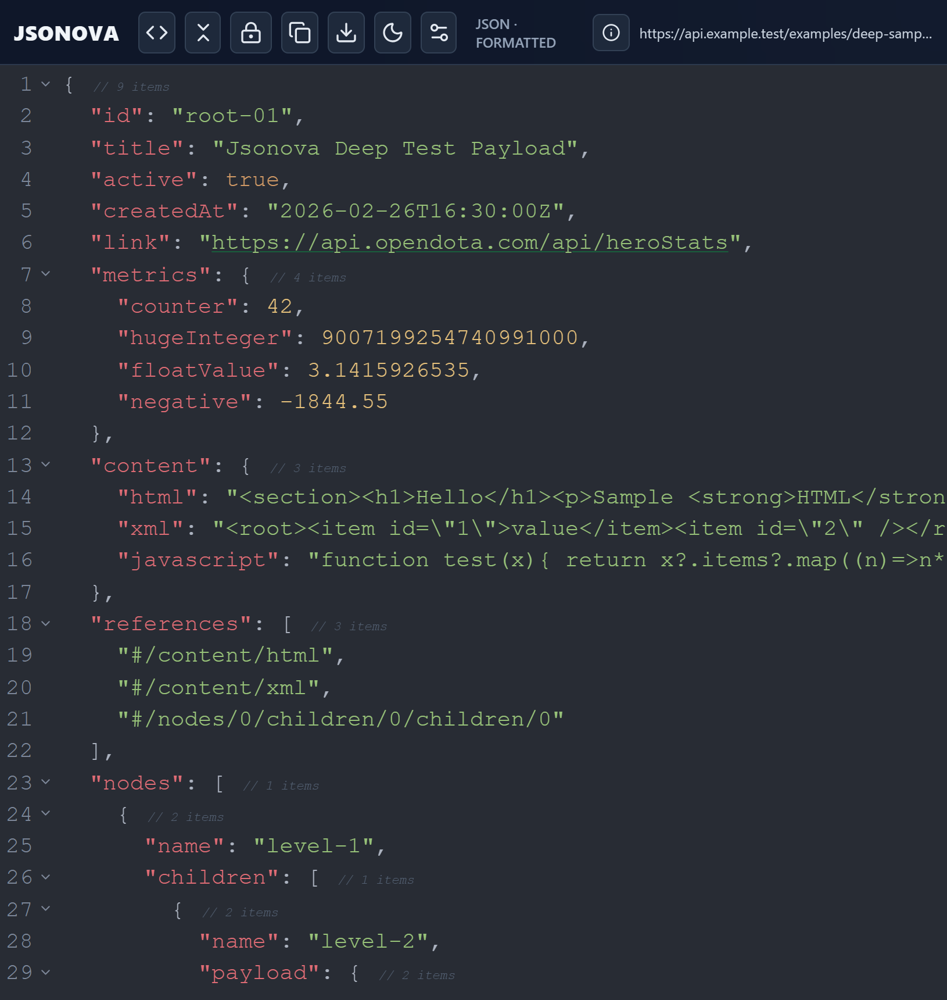
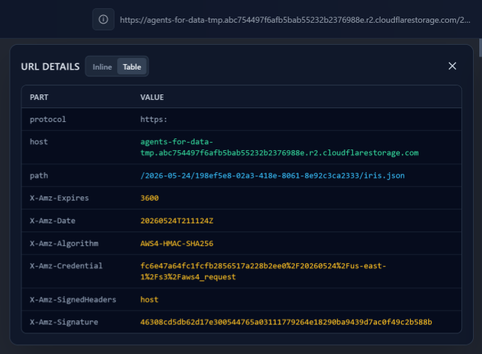

Stay in context
One tab. Zero copy-paste.
Open a response and work with it in place. Switch between formatted and raw views whenever you need the source.
Format JSON and XML, search and sort CSV/TSV tables, and read Markdown—right where you opened them. Switch to the original source whenever you need it. No upload. No context switching.

Built for the way you inspect data
A focused view for each supported document, with the original text always available in RAW. Regular web pages stay regular.
Stay in context
Open a response and work with it in place. Switch between formatted and raw views whenever you need the source.
Navigate faster
Search globally, fold branches, see structure counts, and keep large numbers easy to inspect.
CSV + TSV tables
Search every column with highlighted matches. Shift-click headers to sort by multiple columns, sort by original row number, or reset to file order. Row number visibility is remembered.
Markdown preview
Headings, lists, tables, links, quotes and code blocks in a readable page. Switch to RAW to edit the source, then return to the updated preview.
Follow the trail
Highlight HTTP and HTTPS values and open them in a new window with a click.
Make it yours
Choose light, dark, or live system theme. Tune fonts, wrapping, line numbers, folding, and custom CSS once.
Understand the request too
Turn long API URLs into something you can actually scan. JSONOVA separates the source into protocol, host, path, and individual query parameters without taking you away from the document.
Available for all five document formats

New in JSONOVA 1.2
Open web responses and local .xml files with the same focused workflow you use for JSON.
A shorter path from response to answer
Visit a supported document URL, or open a local file after enabling file access in Chrome.
Fold JSON/XML, search and sort CSV/TSV, or read Markdown without leaving the current tab.
Take the raw or formatted document with you using a generated filename and matching file type.
Frequently asked questions
Quick answers about JSON, XML, CSV/TSV and Markdown in Chrome.
JSONOVA supports JSON, XML, CSV, TSV and Markdown. JSON and XML get syntax highlighting and folding; CSV and TSV open as searchable, sortable tables; Markdown opens as a rendered document. Each format keeps the original text in the RAW editor. Regular web pages remain unchanged.
Yes. Enable Allow access to file URLs in Chrome's extension settings, then open a
local .json, .xml, .tsv or .md file in Chrome.
Chrome may download CSV files before the extension can display them; see the CSV answer below.
JSONOVA can display CSV when Chrome opens it as a text document. Responses served as downloads, and local CSV files Chrome chooses to download, do not reach the viewer. For an endpoint you control, serve the CSV as text/plain and allow inline viewing instead of attachment downloads.
No. JSONOVA processes JSON, XML, CSV, TSV, Markdown, URLs, and viewer preferences locally in your browser and does not send them to JSONOVA-controlled servers, analytics, or advertising services.
JSONOVA is free to use and does not require an account or sign-up.
Search the full document, fold nested structures, switch between raw and formatted views, inspect URL parts, follow links, copy content, or download the source. CSV/TSV adds highlighted table search and multiple sorting levels; Markdown adds a rendered preview. Edits in RAW are kept when you return to either view.
Your payload stays yours
JSONOVA processes the current document in your browser. No document uploads, no analytics, no account, and no remote code.
Ready when your next response arrives
Inspect JSON and XML, explore CSV/TSV tables, and read Markdown with one extension.
Add JSONOVA to Chrome — Free No sign-up. Remove anytime.